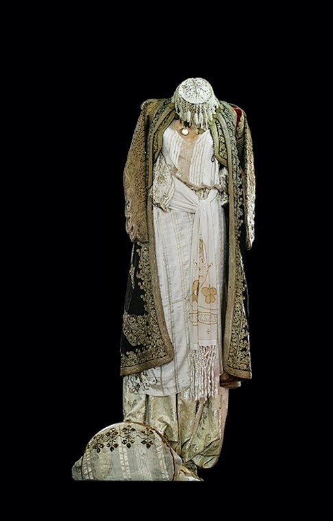

Muzika tradicionale shkodrane, e ashtuquajtura muzikë popullore, është mjaft e njohur në Shqipëri.
Krijimi i këngëve për heronjtë, burrat e zotë dhe gratë e bukura, si dhe kompozimi i këngëve të gëzueshme të dasmave apo rasteve të tjera festive, ka qenë një traditë e gjatë e popullit të Shkodrës.
Në qytetin e Rozafes 2400 vjecar, Shkodër, lindi ne vitin 1870 banda e pare muzikore ne Shqipëri. Drejtuesi i pare ishte Palok Kurti, nje artist popullore e atdhetar i flakët.
Më vone lindi banda muzikore e Frano Ndojes. Ne vitin 1901 zë fill formacioni i bandes artizanatit. Pjesëmarrës ishin 50 instrumentista dhe drejtoheshin nga Palok Kurti. Ata ishin nxenes zanatcinj te profesioneve te ndryshme. Nën drejtimin e Kurtit, arrinje brenda nje kohe te shkurter pervetsimin e instrumentave popullore.
Nën shembullin e shkolles se Parruces, u formua fanfara e konviktit “Maleve Tona”, qe filloi ne vitin 1931, nen drejtimin e Zef Kurtit me nje efektiv prej 20 instrumentistash. Krijimi i saj vlejti per gjallrimin e jetes se studentave te gjimnazit te shtetit. Kurse ne kenget e marshet atdhetare ndihmoi ne edukimin e ndjenjave te atdhedashurise dhe frymes luftarake te saj.
Tituj kengesh:Pranvera filloi me ardhe, Ne Zaman t’asaj furie, Vaj si kenka ba dynjaja, Moj e vogel si floriri.
Kengetare: Frederik Ndoci, Bujar Qamili, Mukades Canga, Vjoleta Zefi, Myfarete Laze, Rita Ndoci
- Klea Saiti
Shkodra,vatra e muzikës popullore shqiptare
Pika turistike
Shkodra është një qytet historik dhe kulturore në veri të Shqipërisë, me një trashëgimi të pasur kulturore që përfshin monumente të lashta, kishë dhe katedrale të ndryshme, muze dhe galeri arti, si dhe peizazhe natyrore të mrekullueshme. Në vijim, do t'ju paraqes disa nga monumentet kulturore më të njohura në Shkodër:
1. Katedralja e Shën Stefanit: Është një ndër ndërtesat më të njohura të Shkodrës dhe është katedralja katolike më e madhe në Shqipëri. Katedralja u ndërtua në fillim të shekullit të 17-të dhe u restaurua në vitin 2010. Ajo është e ndërtuar në stilin gotik dhe ka një arkitekturë të mrekullueshme.
2. Kisha e Shën Ndout: Kisha është ndërtuar në vitin 1227 dhe është një prej monumenteve kryesore të qytetit. Ajo është ndërtuar në stilin roman-gotik dhe është një ndërtesë e rëndësishme për trashëgiminë kulturore të Shqipërisë.
3. Muzeu Historik Kombëtar: Muzeu Historik Kombëtar është një muze i rëndësishëm që përmban eksponate të ndryshme nga historia dhe kultura e Shqipërisë. Muzeu gjendet në një ndërtesë të lashtë dhe restauruar, dhe ka një koleksion të pasur të artikujve të lashtësisë dhe të artit modern.
4. Liqeni i Shkodrës: Liqeni i Shkodrës është një prej peizazheve më të bukura natyrore në Shqipëri dhe është një atraksion popullor për turistët. Liqeni është një vend i mbrojtur i biodiversitetit dhe një prej zonave më të rëndësishme të turizmit në Shqipë
- Enton Ndoci
Kuzhina Shkodrane
Mirësevini në botën e kuzhinës së Shkodrës, Shqipëri - një vend me shije të ndryshme dhe receta tradicionale që janë përcjellë për breza. Relaksohuni dhe lërini shijet tuaja të bëjnë një udhëtim nëpër kuzhinën e Shkodrës.
Le të fillojmë me kënaqësitë e shijshme të kuzhinës shkodrane. Nuk mund të flitet për ushqimet tradicionale shkodrane pa përmendur të famshmen "Fergese", një pjatë e shijshme me speca të pjekur, domate, qepë dhe gjizë, erëza me një përzierje barishtesh vendase dhe e shërbyer e nxehtë me bukë të sapopjekur. Një tjetër që duhet ta provoni është "Tave Kosi", një pjatë kremoze dhe e shijshme e bërë me mish qengji, kos dhe oriz, e pjekur në perfeksion dhe e mbushur me një spërkatje kanelle. Dhe për ata që preferojnë ushqimet e liqenit, "Krapin" është një zierje e shijshme peshku e bërë me një shumëllojshmëri peshqish dhe perimesh të freskëta, të kalitur me barishte dhe erëza vendase. Zakonisht përgatitet duke pjekur në skarë ose skuqur peshkun, i cili më pas shërbehet me një pjesë të bukës së sapopjekur dhe një shumëllojshmëri gatimesh tradicionale shqiptare.
Por asnjë vakt nuk është i plotë pa një prekje ëmbëlsie dhe ëmbëlsirat shkodrane me siguri do të kënaqin çdo ëmbëlsirë. "Ballokume" janë biskota të buta dhe të përtypura të bëra me miell, sheqer dhe gjalpë, të aromatizuara me një nuancë limoni dhe sipër me një pluhur sheqeri pluhur. "Trilece" është një tortë qiellore e njomur në tre lloje qumështi - qumësht i avulluar, qumësht i kondensuar dhe krem i trashë - dhe shërbehet i ftohur me një copë krem pana.
Kuzhina shkodrane nuk është vetëm një festë ushqimore, por një pasqyrim i historisë dhe trashëgimisë kulturore të rajonit. Përdorimi i përbërësve vendas, teknikat tradicionale të gatimit dhe shijet unike e bëjnë çdo pjatë një përfaqësim të traditave të pasura të kuzhinës shkodrane. Pra, ejani dhe kënaquni me shijet shkodrane, ku çdo vakt është festë e jetës dhe çdo kafshatë është një udhëtim nëpër histori.
- Nedit Xhaferi
Veshjet shkodrane
Veshjet popullore, janë pa dyshim një nga manifestimet më të fuqishme të kulturës tradicionale. Ato janë trashëgues të shumë elementëve, që vijnë nga lashtësia dhe nga koha e mesme, por janë njëkohësisht edhe shprehje e marrëdhënieve kulturore me popuj të tjerë gjatë shekujve. Përveç ndryshimit mes veshjeve të femrave dhe meshkujve, këto veshje ndryshojnë edhe mes besimeve fetare.
Veshja e burrave myslimanë përbëhet nga fistani, një fund i gjërë me pala, prej pëlhure pambuku me ngjyrë të bardhë deri në pulpë dhe një këmishë e gjatë prej pëlhure të mëndafshtë, mëngët e së cilës ishin të gjata deri në kycin e dorës, të prera mjaft gjerë. Përmbi kësaj këmishe vishej anteria e bërë prej cope importi në bojë tulle, e cila qëndisej me gajtana të zezë në pjesën e sipërme të kapakëve të mëngës, dhe ndër dorca anteria pritej me kapakë të kryqëzuar, me grykë të gjerë e mëngë të çara. Përmbi anteri visheshin xhamadani dykapakësh dhe jeleku. Në këmbë burrat mbanin këpucë lëkure të kuqe me llapë e majë të rrumbullakët
Veshja e grave myslimane përbëhet nga këmisha e gjatë deri në gju me mëngë shumë të gjera prej mëndafshi ose faqelli të bardhë. Këmishat qëndiseshin me fije ari e laxhyhera, ose me mëndafsh, ose me tel argjemdi në mëngë e në grykë. Mbi këmishë vishej një jelek i ngushtë kadifeje ose kumashi të kuq. Sipër jelekut vishej anteria prej kadifeje, një formë xhakete me mëngë të çara deri te llërët. Në pjesën e poshtme të trupit visheshin branavekët, që janë të prerë mjaft gjerë. Në brez gruaja mbante një shall kashmiri ose mëndafshi me vija shumëngjyrëshe e me thekë në dy cepat. Sipër jelekut e anterisë vishej xhybeja, një mantel i gjatë deri në gju, punuar prej cope të kuqe, më rrallë në të kaltërt. Në kokë vendosej dallfesi, një lloj kësuleje e vogël e kuqe, zbukuruar me xhufkë ari.
Veshja me benevrekë ishte veshja e përgjithshme e burrave katolikë. Benevreku bejej prej cope te zeze, ose prej pelhure pambuku. Menyra e prerjes ishte e tille qe bente te krijoheshin sa me shume pala, me nje gjeresi uniforme nga mesi e deri poshte gjurit. Ne dy anët, mes palave kishte dy xhepa. Permbi te vinte jeleku pa menge. Zbukurimet e jelekut jane te thjeshta, me shirita e gajtane, te vendosur ne forme vijash te drejta paralele ose te lakuar në pjesen e perparme, ne mes te vijave jane ngjeshur edhe lajle ne rrjeshta te drejte, ndersa ne shpine mbizoterojne motive te rregullta gjeometrike, ku ne shumicen e rasteve formojne nje trapez te madh, ne qender te se cilit jane qendisur motive floreale, kurse anash vija te drejta e trekendesha.
Veshja e grave katolike përbëhej nga këmisha e gjatë deri në pulpë të këmbës, mëngët e gjera dhe e hapur në gjoks. Në pjesën e poshtme të trupit grate vishnin branavekët prej pëlhure të shndritshme ngjyrë violet ose patllixhan. Në prehër nga brezi deri poshtë varej armaci, një copë e prerë afërsisht në formë pesëkëndëshi sa një shuplakë dore, qëndisur me mëndafsh bojë uthull. Sipër këmishës vishej jeleku, i cili në dy anët e kapakëve kishte të qepur 20 ose më shumë sumbulla të punuara me pe mëndafshi ngjyrë uthull me nga një merxhan të kuq në majë. Sipër jelekeut vihej anteria, punuar në cope të kuqe me vija të bardha, qëndisur me gajtana mëndafshi të zi. Për mbi anterinë pastaj vishej xhybeja pa mëngë ngjyrë uthull e gjatë deri në gju. Në këmbë mbanin corape prej pambuku të bardhë e papuçe të zbukuruara me fije ari e mëndafshi. Mbi kokë vendosej sallmani i lidhur me një lidhës mëndafshi, e i qëndisur me ar e laxhyhera
-Ditmar Zekja

Sporti ne shkoder
Shkodra, qyteti i kulturës, biçikletave dhe djepi i futbollit, është nga të paktat qytete shqiptare, që është kaq shumë e dhënë dhe “prodhon” kaq shumë talente në sport.
Duket se në botën e sportit epiteti “djepi i futbollit” ka eklipsuar sportet e tjera që luhen masivisht në Shkodër. Por shkodra eshte mjaft e njohur edhe per sporte te tjera si atletika, volejboll, basketboll, boks, ciklizem etj.
Garat e para publike në atletikën e lehtë në Shqipërinë datojnë në vitin 1920 në qytetin e Shkodrës. Themelimet e tyre kanë të bëjnë me themelimin më 1919, të asaj që njihet si Shoqnia “Vllaznia” e Shkodrës, me kryetar atdhetarin e shquar Hil Mosi.
Atleti qe ngriti flamurin shiqptar me lart se asnjeher ne atletike ishte atleti Shkodran Izmir Smajlaj I cili fitoi dy medalje ari, një në Kompionatin Ballkanik e, më pas, një tjetër në Mitingun Ndërkombëtar të Serbisë.
Futbolli eshte sporti me i ndjekur ne Shkoder e ne te gjithe Shqiperine. Ne shkoder futbolli u themelua nga shoqata „Vllaznia“ . Ky klub eshte klubi me I hershem e me me emer ne Shqiperi duke krijuar nje histori te larmishme me shume trofe e talente qe kane spikatur jo vetem ne Shqiperi por edhe jashte vendi si Loro Borici nga i cili u mor emri i stadiumit te Shkodres, Ramazan Rragami, Sabah Bizi, Paulin Ndoja, Astrit Hafizi, Hysen Zmijani etj.
Nder vite „Vllaznia“ ka ka arritur te fitoje 9 here kampionatin kombetar, 7 here kupen e Shqiperise dhe 2 here Superkupen e Shqiperise.
Nuk duhet len menjane futbolli I femrave ku Vllaznia ka sukses shum te madh duke arritur ne kompeticione europiane shume te rendesishme si Champions League ne sezonin 22/23 duke shkruar historine ne Shkoder dhe ne Shqiperi pasi asnje klub nuk e kishte arritur te kualifikohej me pare si femra ashtu edhe ne futbollin e djemve. Vajzat jane 9 here fituese te kampionatit shqiptar dhe 9 here kampione te kupes se Shqiperise.
- Andri Skuqaj
Kultura dhe trashëgimia
Shkodra është cilësuar nga përsonalitete si ‘’djepi i kulturës shqiptare’’. Që në shek. XI u përdor alfabeti latin dhe me këto gërma Pal Engjulli nga Drishti i Shkodrës shkroi dokumentin e parë në gjuhën shqipe ‘’Formulën e Pagëzimit’’. Me 1858 në Shkodër, dhe për herë të parë në Shqipëri, zbatohet arti i fotografimit. Fotografet Marubi do ti japin qytetit një fototekë unikale në Shqipëri. Me 1870 krijohet shtypshkronja e pare nga etërit jezuitë.
- Enduan Fili